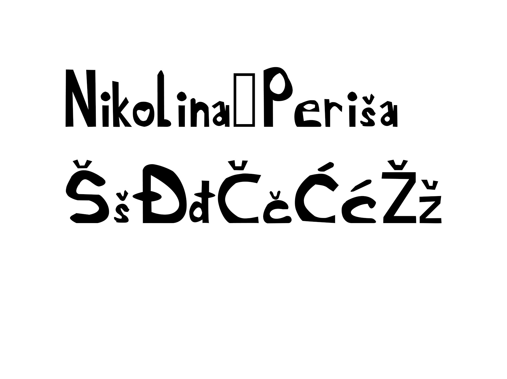
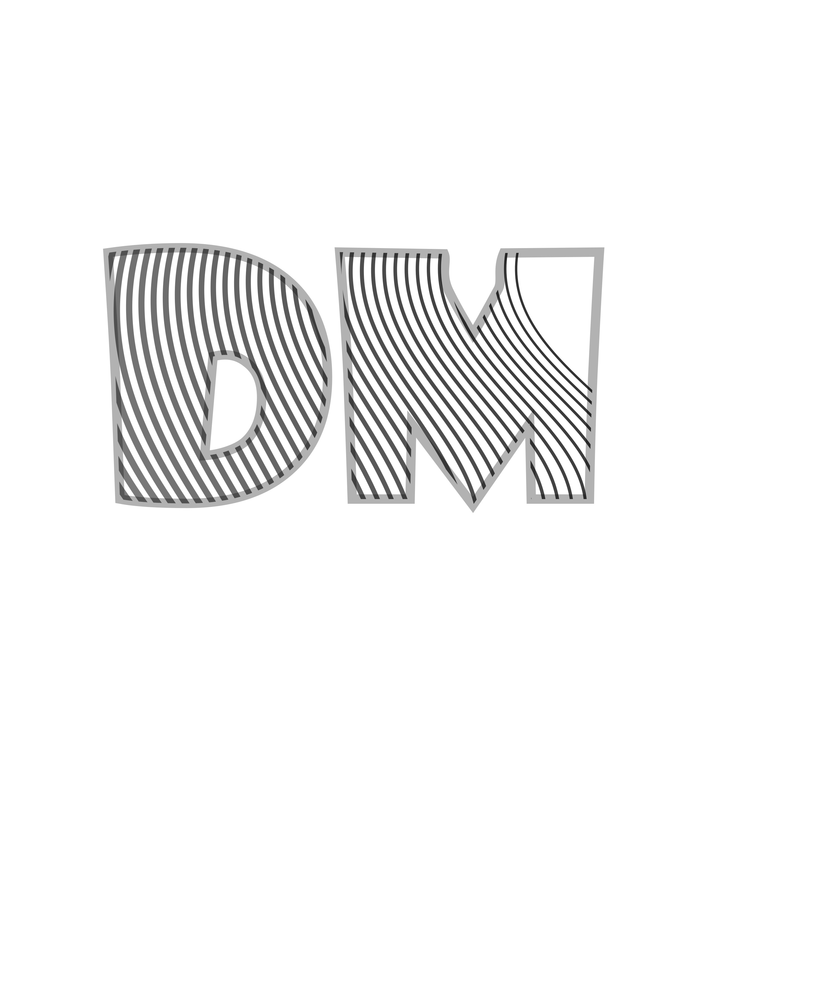
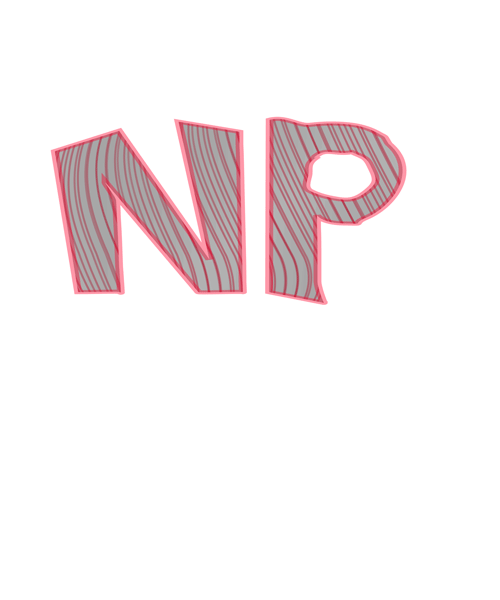
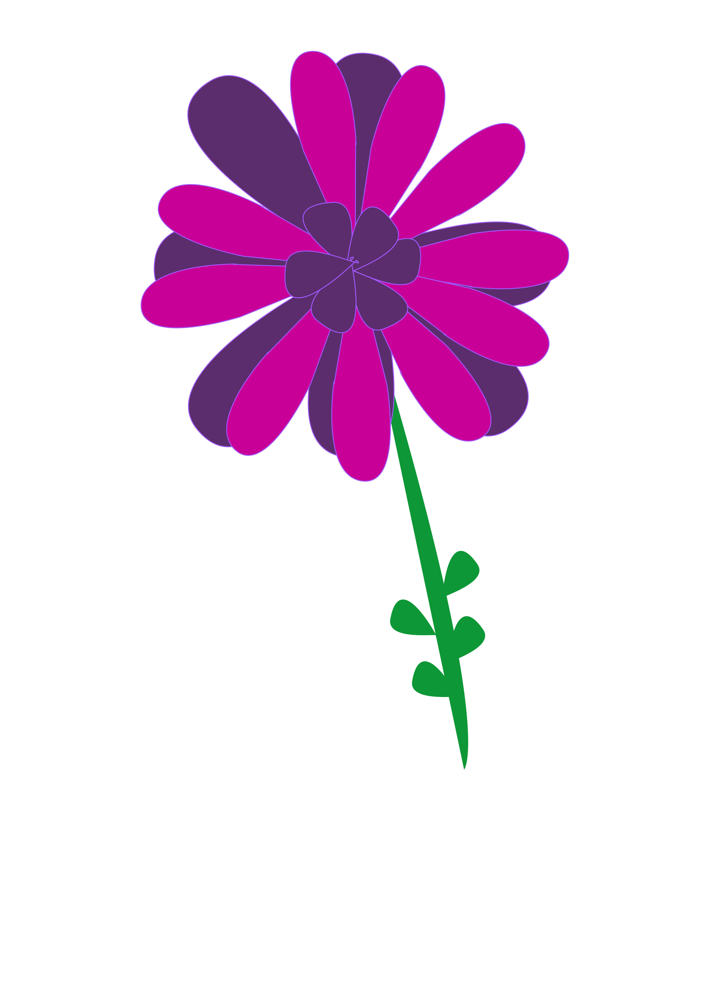
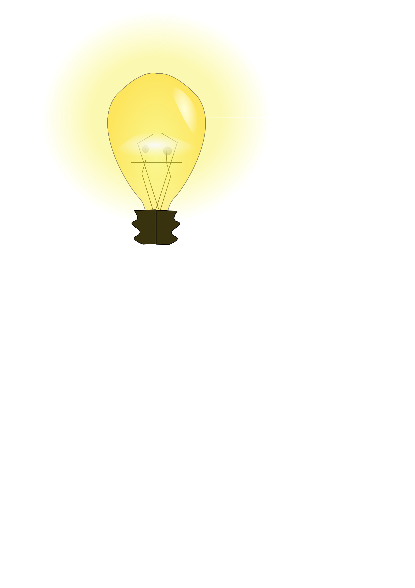
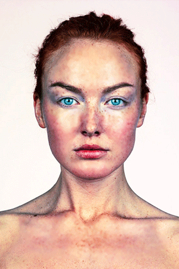
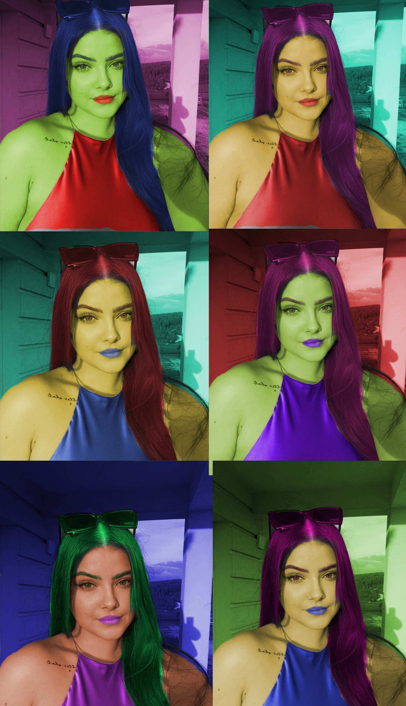
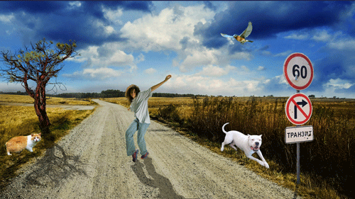
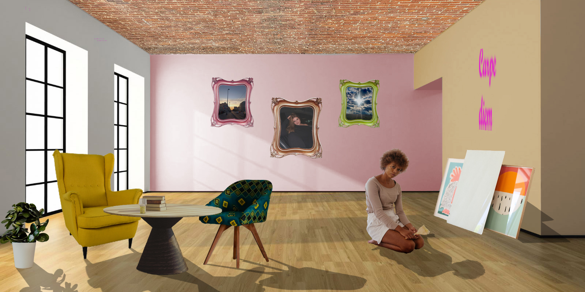

Vježbe
Ovdje se nalaze slike i zadatci s vježbi i projektnih zadataka koje sam radila tokom semestra.
Vježba 1
Font
Vježba 2a i 2b
Kreirala sam krivulje koje su poravnate prema mreži koordinatnog sustava, odredila im boju i debljinu te dodala interpolaciju. Koristeći svoj font s prošle vježbe preko krivulja sam ispisala tekst i od njega napravila masku. .
 Vježba 3
Multipliciranje objekata nacrtanima sa alatom Pen.
Tehnikama kopiranja više sam puta postavila oblike, te ih obojala bojama kreiranim u novoj Color grupi.

Vježba 4
Izrađivala sam složene objekte koji se sastoje od više staza metodama spajanja (Unite/Compound path) ili oduzimanja oblika (Difference/Subtract). Aplicirala različite vrsta gradijenata.
Projektni zadatak 1
Iskoristila sam vlastiti font za riječ "Voće". koristila sam zadane elemente i tehnike (Bezierove krivulje, gradijenti, maskiranje, transformacije, mesh) prema zadanoj slici.

Vježba 5a i 5b
Retuširanje slika.

Vježba 6
Koloriranje slike.
Vježba 7
Kombinirala sam više fotografija izrezivanjem.
Projektni zadatak 2
Kreiranje slike u Adobe Photoshopu koristeći retuširanje, fotomontažu i koloriranje.
Vježba 8
Ova vježba se bavi osnovama obrade video materijala i uvođenjem multimedije u video projekt.